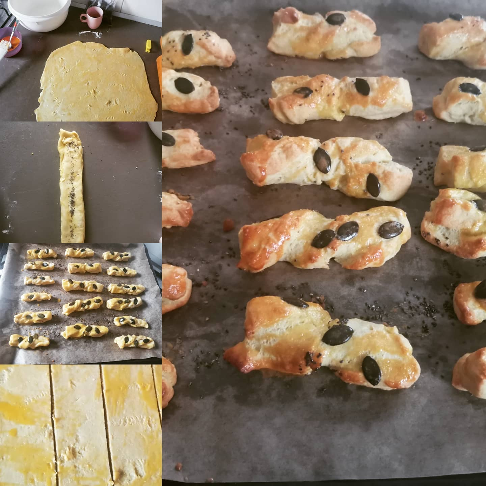

Bryndzové tyčinky — Normy Jedál
Bryndzové slané tyčinky 🥳🥳
Na Silvestrovské pohostenie 🙃
Suroviny cca na 36ks:
Bryndza čerstvá 200g
Jogurt biely 150g
Špaldova hladka muka 400g
Sušené droždie
Vajce 1ks 🥚
Olivovy olej 150ml
Soľ
+na potretie vyslahane vajicko, do ktoreho mozeme pridat cesnak, a na vrch semienka chia a dynove semienka
Muku si zmiešame s droždím a soľou, v druhej miske zmiešame bryndzu s jogurtom a pridame ju k múke. Pridame vajicko a olej, spracujeme cesto, ktoré dáme na hodinku do chladničky odležať.
Po odlezani cesto rozdelíme na 2ks a každé vyvaľkáme na tenky plát, nakrájame na rovnaké pásy, natrieme cesnakom a vajíčkom. Preložíme pásy na seba, pritlačíme, posypeme chia semienkami. Nakrajame na malé kúsky a vytvarujeme do tvaru tyčinky,poukladáme na plech s papierom na pečenie, dozdobime dnyovymi semienkami. Dáme piecť do rury pri 200° na cca 20-25 min. A hotovo!!
DOBRÚ CHUŤ!!! 🍽️🍽️🍽️
GI: 42
Výživové hodnoty na 1ks :
Energia : 103.4kcal/ 432.6KJ
Sacharidy: 8.43g
Z toho cukry : 0.5g
Sol: 0.4g
Bielkoviny: 3.45g
Tuky: 5.87g
Vláknina : 1.48g
#fitrecepty#fitstyle #vianoce2020 #silvester #zdravo #zdravizivotnistyl #zdravastrava #zdravejedlo#zdravo #fitnessrecepty #slavnostnejedlo #bryndza #bryndzovetycinky